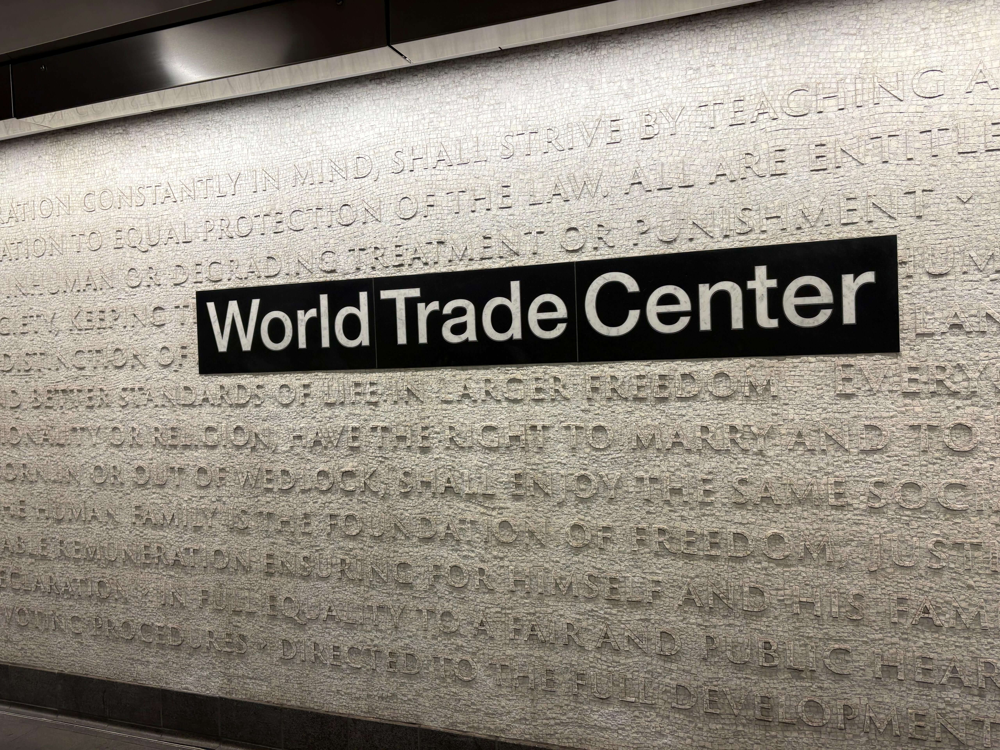

World Trade Center
New York City · United States
The World Trade Center stands at the heart of Lower Manhattan, representing both New York City's ambition and its resilience. Best known for One World Trade Center, the tallest building in the Western Hemisphere, the area brings together striking contemporary architecture, financial history, and powerful sites of remembrance. The 9/11 Memorial, with its twin reflecting pools marking the footprints of the former towers, offers a deeply moving space for reflection. Nearby, the Oculus stands out as an architectural landmark, while the surrounding streets reveal the energy and transformation of Lower Manhattan. The area also reflects how New York has rebuilt and renewed itself while preserving the memory of those who lost their lives. Visiting the World Trade Center is not simply an encounter with an iconic skyline; it is also an opportunity to reflect on the history, loss, and enduring spirit of a city.
My Photo Gallery
Personal photographs and memories from the World Trade Center, New York City.
View All Photos ↗